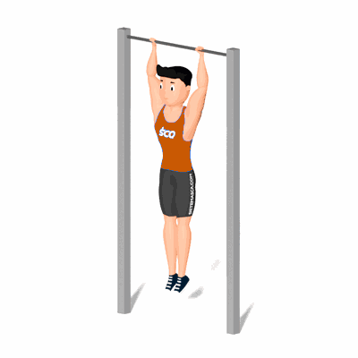

Elevação de Perna na Barra Fixa

O exercício irá ativar os músculos abdominais, com maior ênfase no abdômen inferior. Além disso, esse exercício possibilita um bom trabalho da região interna dos músculos abdominais, ou seja, de músculos mais profundos. E isso é excelente, porque eles estão ligados especialmente com o equilíbrio e a estabilidade do tronco.
Ficha Técnica
Tipo: Musculação
Grupo Muscular: Abdome
Aparelho: Nenhum
Músculos: Nenhum
Como realizar
- Fique abaixo de uma barra fixa e então eleve seus braços se pendurando na mesma;
- Mantenha-se com o tronco, os braços e as pernas retas;
- Para que possamos aumentar o trabalho nos abdominais, devemos realizar o exercício com os joelhos flexionados;
- Contraia o abdômen;
- Com as duas pernas juntas e, ao mesmo tempo, tente elevar as suas pernas até a altura da cintura, mais ou menos, fazendo um ângulo de 90º;
- Após isso, volte com suas pernas, de forma controlada e com as duas pernas ao mesmo tempo, a posição inicial, onde ambas as pernas estão estendidas.
 RC STORE
RC STORE